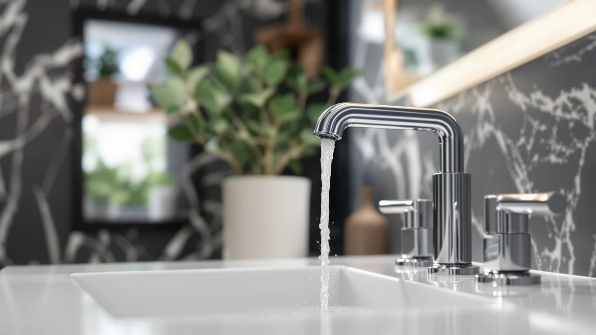

How to Clean Delta Bathroom Faucets: Complete Guide (2026)
Prices and picks verified as of October 2026. Independent, reader-supported reviews.


Things to Know Before You Buy
- Delta's finishes are not all equally tolerant of acid. Chrome and stainless shrug off vinegar, but matte black, brushed gold, and bronze need shorter contact time and a rinse right after.
- Most of the chalky buildup around the base and spout is calcium and lime from hard water, not dirt, so soap alone will not remove it.
- Touchless Delta faucets like the Lineax have a sensor housing near the base. Keep that area damp-wiped only and avoid soaking it or spraying cleaner directly into the sensor window.
- A clogged aerator is the usual cause of a weak or uneven spray, and it unscrews by hand on most Delta models without any tools.
- Abrasive pads and powdered cleansers scratch Delta's protective coating permanently, even on finishes marketed as scratch-resistant.
Knowing how to clean Delta bathroom faucets properly keeps the finish looking new and stops the white, chalky buildup that hard water leaves around the base, spout, and handle. The routine below uses ingredients already in most kitchens, works on chrome, nickel, matte black, and brushed gold Delta faucets, and takes about half an hour from start to finish.
You do not need a specialty cleaner or a trip to the hardware store. Vinegar, dish soap, and a soft toothbrush handle the mineral deposits, grime, and soap scum that build up around a bathroom faucet over weeks of normal use. Follow the five steps in order, and pay close attention to the drying step. Skipping it is the single biggest reason water spots come right back.
What You'll Need
- Supplies: white vinegar, mild dish soap, microfiber cloths
- Tools: a soft-bristle toothbrush and a spray bottle
Step 1: Clear Loose Debris and Soap Scum
Start by running warm water over the entire faucet, including the base, the handle, and the underside of the spout. This loosens surface dust and softens any dried soap scum so it comes off easily instead of getting pushed around once you add vinegar.
Wipe the faucet down with a damp microfiber cloth and a small amount of mild dish soap, working from the top of the spout down to the base. This first pass removes everyday grime and gives you a clear view of where the hard water stains actually are before you treat them.
Step 2: Mix a Vinegar Cleaning Solution
Combine equal parts white vinegar and warm water in a spray bottle. This diluted mix is strong enough to dissolve calcium and lime deposits on a Delta bathroom faucet without being so concentrated that it damages the finish.
If you are cleaning a matte black, bronze, or brushed gold Delta faucet, keep the ratio closer to one part vinegar to two parts water. Those finishes are more reactive to prolonged acid exposure than chrome or stainless, so a milder solution protects the coating while still cutting through buildup.
Step 3: Soak and Scrub Hard Water Stains
Spray the vinegar solution directly onto the stained areas, usually around the base of the spout, the aerator tip, and anywhere water tends to pool and dry. Let it sit for five to ten minutes on chrome or nickel, and no more than two to three minutes on darker or gold finishes.
Scrub the softened stains with a soft-bristle toothbrush, working in small circles rather than dragging the bristles across the surface. For stubborn spots, wrap a vinegar-soaked cloth around the area and let it sit for a few extra minutes before scrubbing again. Never use a scouring pad or anything abrasive on a Delta faucet finish.
Step 4: Clean the Aerator and Handle Crevices
Unscrew the aerator from the tip of the spout by hand, turning counterclockwise. If it will not budge, wrap a cloth around it for grip rather than reaching for pliers, which can scratch the finish or crack the plastic housing.
Soak the aerator in the leftover vinegar solution for ten minutes, then rinse out any trapped sediment before screwing it back in. While it soaks, use the toothbrush to clean grime out of the seam where the handle meets the base and around any decorative trim rings, since those tight spaces collect the most residue.
Step 5: Rinse, Dry, and Polish the Finish
Rinse the entire faucet thoroughly with clean water to remove every trace of vinegar. Leftover acid residue is what causes new spotting within a day or two, so do not skip this step even on areas that look clean.
Dry the faucet immediately with a fresh microfiber cloth, then buff it in small circles with a second dry cloth to bring back the shine. Finish by drying the base where it meets the countertop, since trapped moisture there is a common source of water spots returning the next morning.
Common Mistakes to Avoid
The biggest mistake you can make when cleaning a Delta bathroom faucet is reaching for an abrasive sponge or powdered cleanser on a stubborn stain. These scratch the protective coating permanently, and once that happens, the faucet attracts grime faster in that spot for the rest of its life. Stick with a soft cloth or toothbrush, even if it takes a second pass.
Letting vinegar sit too long on matte black, bronze, or brushed gold finishes is the second most common error. The acid that works safely on chrome can dull or discolor darker Delta finishes within minutes, so set a timer if you tend to get distracted mid-cleaning.
Skipping the aerator is another frequent oversight. A clogged aerator is often mistaken for a plumbing problem when the real cause is sediment buildup, so leaving it uncleaned means the faucet never performs the way it should even after everything else is spotless.
Finally, do not spray cleaner directly onto a touchless Delta faucet's sensor window or let water pool around the base of the unit. Dampen a cloth instead and wipe that section by hand to avoid triggering the sensor or letting moisture reach the electronics inside.
Our Top Picks
If regular cleaning has not kept pace with scratches, pitting, or a worn finish, replacing the faucet is often faster than fighting the damage. These three Delta models cover a touchless upgrade, a budget-friendly swap, and a wider widespread layout.

Editor's Pick
Delta Lineax Touchless Bathroom Faucet
Sensor activation cuts down on the fingerprints and soap smears that drive most faucet cleaning in the first place.
$349.00
Check Price on Amazon
Best Value
Delta Broadmoor Centerset Brushed Nickel
Brushed nickel hides water spots between cleanings better than polished chrome, which shows every drop.
$130.32
Check Price on Amazon
Premium Choice
Delta Trinsic U-Spout Widespread Bathroom
The open U-spout design leaves fewer tight seams for grime to collect in than a standard centerset faucet.
$459.00
Check Price on AmazonFrequently Asked Questions
How often should I clean my Delta bathroom faucet?
Wipe it down once a week and run the full vinegar routine every two to four weeks. Homes with hard water may need the deep clean every two weeks to keep mineral deposits from setting in.
Is vinegar safe on all Delta faucet finishes?
Diluted vinegar is safe on chrome, stainless, and brushed nickel Delta faucets for up to ten minutes of contact time. On matte black, bronze, or brushed gold models, keep contact under three minutes and rinse immediately, since the acid can dull those coatings with longer exposure.
Can I use baking soda instead of vinegar on a Delta faucet?
Yes. Mix baking soda with a small amount of water into a paste and apply it the same way you would the vinegar solution. It is gentler on sensitive finishes, though it typically takes more scrubbing to match the same result on heavy buildup.
Why does my Delta faucet keep getting white spots even after cleaning?
White spots almost always come back because the faucet was not dried immediately after rinsing. Water left to air-dry deposits fresh mineral residue as it evaporates, so towel-dry the faucet within a minute of the final rinse every time.
How do I clean a touchless Delta faucet without damaging the sensor?
Dampen a cloth with the diluted vinegar solution and wipe the sensor housing by hand instead of spraying cleaner directly on it. Keep the area around the base dry, and avoid letting water pool near the electronics at the bottom of the unit.
Verdict
Learning how to clean Delta bathroom faucets comes down to a short, repeatable routine: clear the surface grime, soften mineral deposits with diluted vinegar, scrub gently, clean the aerator, then rinse and dry immediately. Done every two to four weeks, this keeps a Delta faucet's finish looking close to new for years instead of fading under hard water buildup.
The details matter more than the ingredients. Matching your vinegar dilution and contact time to the specific finish, chrome versus matte black versus brushed gold, is what separates a faucet that stays bright from one that dulls prematurely. Drying the faucet right after rinsing is the step most people skip, and it is also the one most responsible for water spots reappearing within a day.
If a Delta faucet has reached the point where scratches, pitting, or worn plating no longer respond to cleaning, replacing it is the more practical move. The picks above cover a touchless upgrade, a budget-friendly swap, and a wider widespread option, all from Delta, so you can match the replacement to the same finish and footprint you are used to.